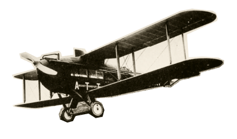

Чтобы поддержать международный васюкинский турнир посетите лекцию на тему: «Плодотворная дебютная идея»


И сеанс одновременной игры в шахматы на 160 досках гроссмейстера О. Бендера
| Место проведения: | Клуб «Картонажник» |
| Дата и время мероприятия: | 22 июня 1927 г. в 18:00 |
| Стоимость входных билетов: | 20 коп. |
| Плата за игру: | 50 коп. |
| Взнос на телеграммы: |
|
ЭТАПЫ ПРЕОБРАЖЕНИЯ
ВАСЮКОВ
Будущие источники
обогащения васюкинцев
3
Поднятие сельского хозяйства в радиусе на тысячу километров:производство овощей, фруктов, игры, шокоадных конфет
6
Постройка сверхмощной радиостанции для передачи всему миру сенсационных результатов
7
Создание аэропорта «Большие Васюки» с регулярным отправлением почтовых самолётов и дирижаблей во все концы света, включая Лос-Анжелос и Мельбурн
